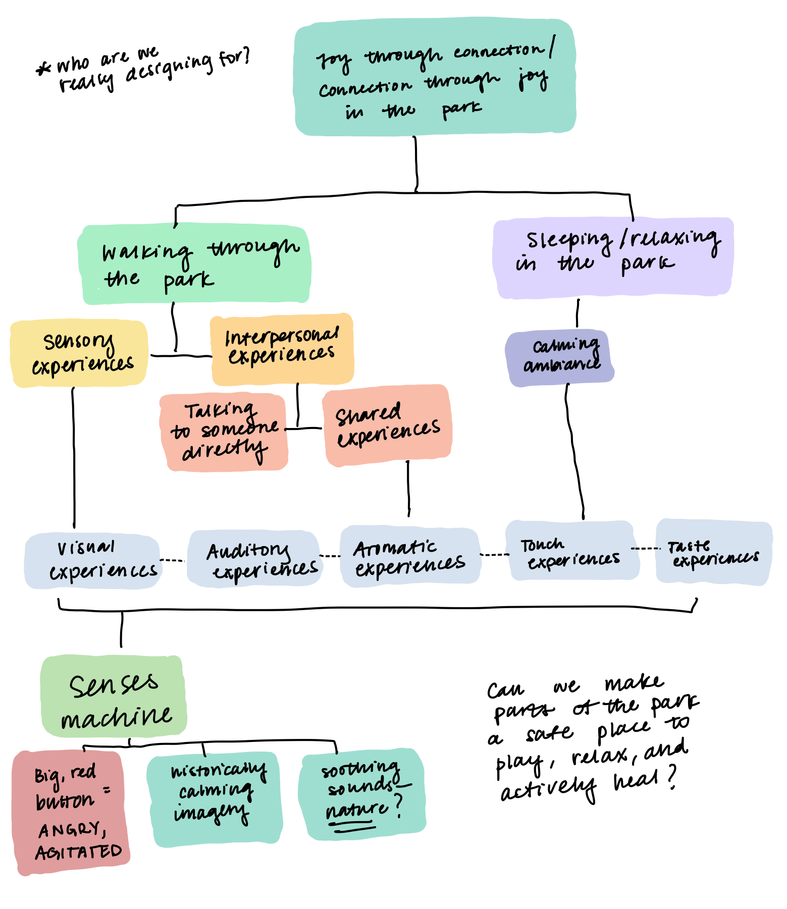

Project 1
Connecting Strangers
An interactive project in New York city to engage strangers without text or any set of instructions.
Location
One of the many unique aspects of New York City is the embedded green spaces that are sectioned off from the rest of the concrete jungle buildings. We knew that we wanted to use a park space for our project because of our common interest in nature, and we ultimately chose Washington Square park due to its close proximity to campus, and it's beautiful arch, fountain, and unique layout.
Design Research
We walked around the park and carefully recorded what we saw and where we saw it. We noticed that other than the intensional division of the park by its properties and roads, there is also a clear division between the people that gather around the park, noticeably the homeless people. We want to connect people of different groups and ages that are within the park proximity, and to create something that can be enjoyed by everyone.
During our time at the park we also interviewed a young vendor. We found her on the benches at the east side of the fountain, and she informed us that she comes to the park on most days and nights to sell ice cold water, soda, and other refreshments. She also says that she knows many of the other vendors and folks who frequent the park, such as police officers (who were mostly there for show), parks workers, addicts, and homeless people.


AEIOU

Behavioral Mapping


Brain Storming


Our Concept
Our concept is to connect the people of different communities that reside within the park through fun and whimsical interactions. To do so, we chose a medium that can travel distance, and able to be enjoyed by people of all ages, BUBBLES! Ultimately we want bubble machines to be disguised in different structures within the park. It would be a very cute and decorative approach where bubble machines could be covered up amongst some playful objects that we make ourselves, like iridescent, geometric sculptures made of translucent films, or, it would be from a curious approach as well. Since people tend to approach things that intrigue them curiously, it would be a fun idea to put bubble machines in unlikely places, such as inside trash cans, hidden among bushes and trees, or inside stuffed animals that we leave around the park.
Before we spend too much resources getting actual bubble machines, we want to test the range of reach for the bubbles in different locations, and see how people would react them. We plan to hang up webs with loops on them, and dip them in soapy water to see if the area is windy enough to produce bubbles on its own and let it travel across the park.


Interface for interaction
A shared canvas or making surface, where strangers and passerbys can contribute to a shared piece of art, while still maintaining a safe and comfortable distance. This point of interaction should provide opportunities for person-to-person, person-to-group, and person-to-public. We hope that this installation will culminate in a lasting artifact, created by the collective curiosity and joy of park-goers.
Materials
1. Interface
2. Wayfinding / indicators